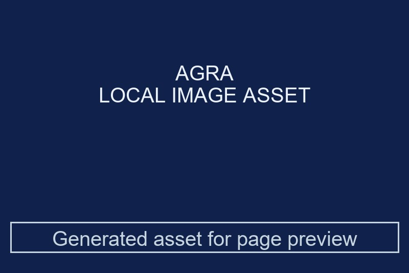
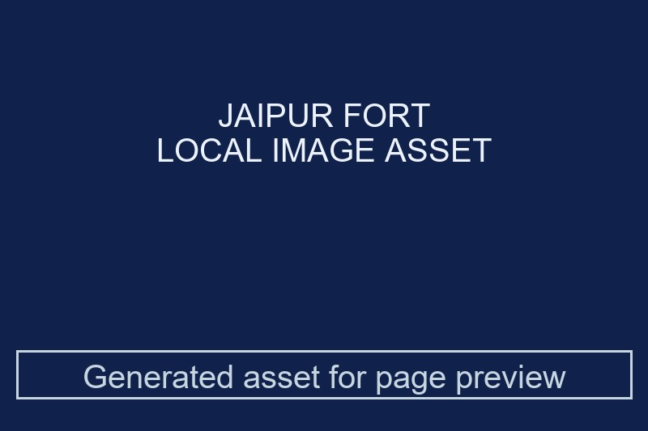
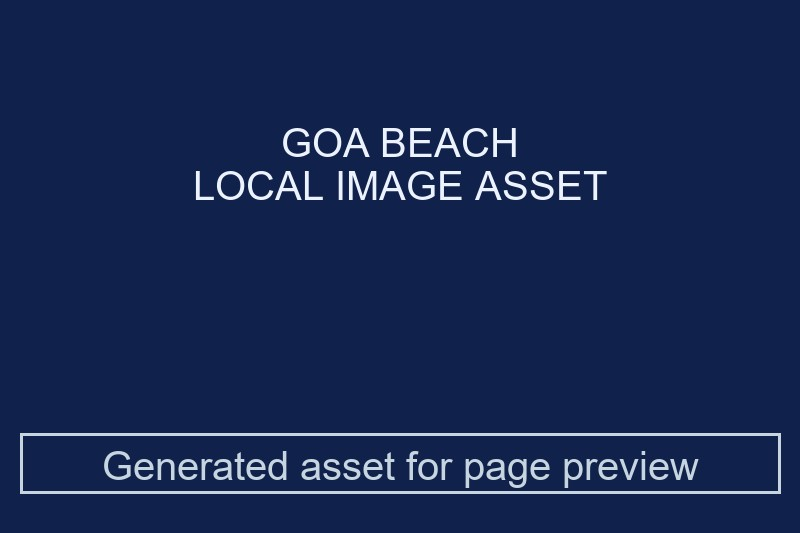
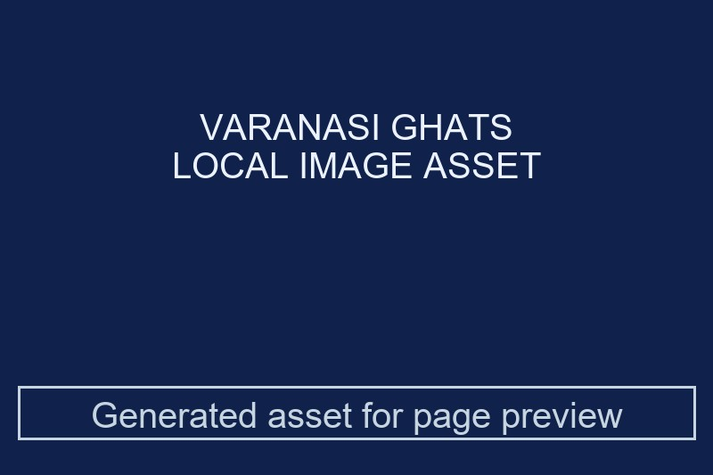
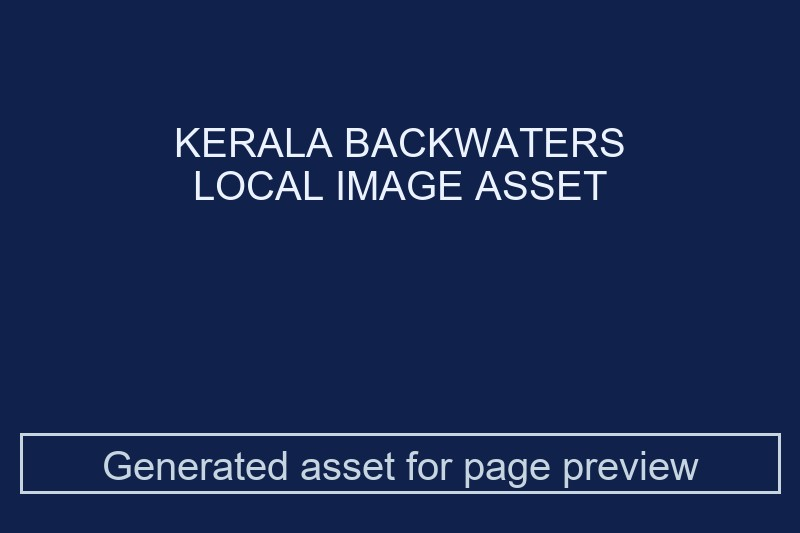
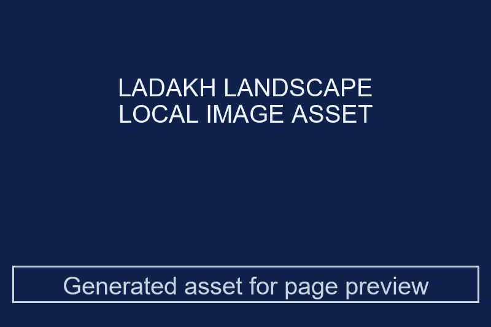
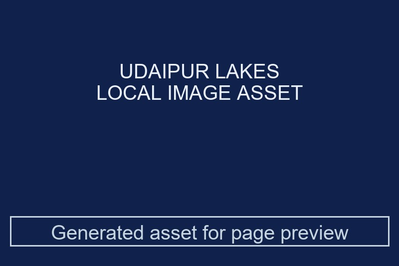
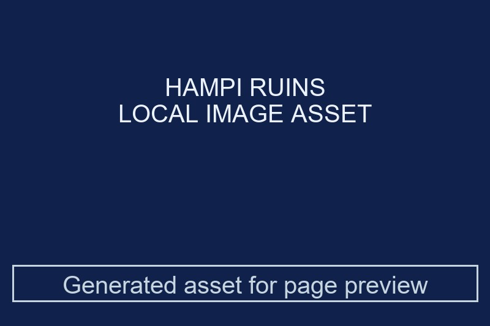
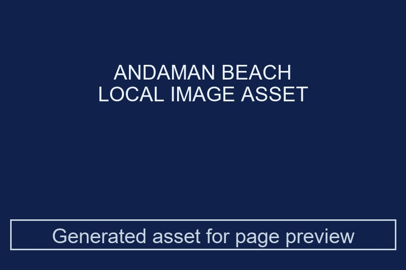

1. Agra
Agra is a historic city in Uttar Pradesh, home to the world-famous Taj Mahal and rich Mughal heritage.
- Best time to visit: October to March
- Highlights: Sunrise view, marble inlay work, gardens
Beginner-friendly travel guide with top attractions, images, and quick links.
Know moreThis page is a travel showcase that highlights India’s most iconic destinations with strong visuals and clear descriptions. It is designed to help you explore famous sights, vibrant cities, and serene landscapes in one place.
Browse the links below to visit a related activities page for each destination and learn what makes each place special.

Agra is a historic city in Uttar Pradesh, home to the world-famous Taj Mahal and rich Mughal heritage.

Jaipur, known as the Pink City, is famous for forts, palaces, and colorful local culture.

Goa is known for its beautiful beaches, lively markets, and relaxed coastal atmosphere.

Varanasi is one of the oldest living cities in the world and a major spiritual center for Hindu pilgrims.

The Kerala backwaters offer peaceful houseboat stays, green landscapes, and a calm river lifestyle.

Ladakh is famous for its dramatic mountain scenery, high-altitude lakes, and adventure travel.

Udaipur is called the City of Lakes and is celebrated for its royal palaces and romantic lakeside views.

Hampi is an ancient city with impressive ruins, temples, and unique rock formations.

The Andaman Islands are known for clear blue waters, coral reefs, and tropical beaches.
The Golden Temple is a sacred Sikh shrine famous for its golden dome and peaceful atmosphere.